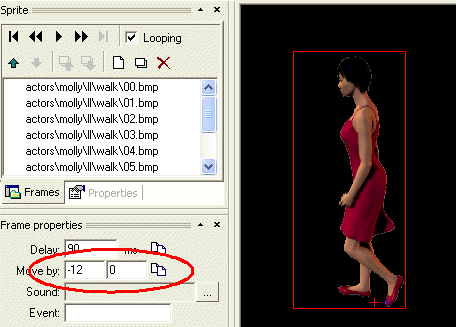

The "actors" represent the characters of your game (both player characters and non-player characters). The actor has the ability to walk in up to eight directions, he can turn to a certain direction, he can talk and he can play custom animations (such as a "take item" animation). A typical actor comprises of many animations therefore designing an actor is a time consuming process.
A typical adventure game contains lots of various characters, but you can notice most of these characters are somehow "limited", i.e. they are only standing/sitting at one fixed position. That's to limit the amount of work needed to design a fully-featured actor. In WME, it's recommended to use the "entities" to design those simpler characters (learn more about entities) and to only use actors to design complicated (walking) characters, such as the player character.
There is currently no tool for designing a WME actor. You must create an actor by writing a simple text file, defining the actor's properties. But don't worry, the structure of this file isn't very complicated and you will probably need to create very few actors for your game.
What do we need to build an actor? First, we need the animations (sprites). Each actor usually needs several sets of animations, such as walking animation, idle animation, turning animation and talking animation. Also, remember the actor is able to walk into eight directions, therefore you may need up to eight versions of each animation type for different directions. You don't necessarily need to define all eight directions if you don't want to, though. For example if your actor can only walk to four directions (common for smaller games), you can only define the four directions necessary. The engine will automatically choose the nearest defined direction. You should define at least one direction for each sprite set, though.
The actor definition doesn't need to reference any special animations, such as "take item" animations or idle animations. Those specific situations can be handled separately using the scripting language (learn more about scripting).
The walking animations are used when the actor walks from one place to another. The only specific thing about walking animations is that you have to define their "move" properties in SpriteEdit. The "Move X" and "Move Y" properties specify how much does the actor move when walking.
For example, the following picture displays the "walk left" animation of an actor. As you can see, the animation defines that the selected frame moves the actor by -12 pixels in the X coordinate (i.e. 12 pixels to the left).

This way you can define the walking speed of your actors. Note that the amount of pixels is adjusted automatically when the actor is scaled (i.e. he moves slower when he's scaled down and vice versa).
The idle animations are used when the actor is standing at one place. You can use only one frame for the idle animation, or you can create some simple animation, such as breathing.
When the actor is facing a certain direction and he needs to turn to another direction, he plays the turning animation. The turning animations are defined for each direction and when the actor is turning, he plays the turning animation for each direction subsequently. Also, the turning animations are different depending on whether the actor is turning right (clockwise) or left (counterclockwise). For example, when the actor is facing up and he needs to turn down, he plays the turning animation for the up, up-right, right and down-right directions and he uses the "turn right" set of animations.
The turning animation usually comprises of only one frame, but you can use a more complex animations to create a more realistic effect (people are actually shifting their feet when turning, try it :-)
Talking animations, as the name suggests, are used when the actor is talking. WME allows you to achieve complex effects for actors' talking by defining so called "talk stances". Basically, the stances are different animations used for talking, that can be combined for one actor.Talk command. For example you can use talk stances to add gestures to actor's talking. You can define as many talk stances as you want, and when you call the actor's Talk method from script, you can specify which stances should be used while talking (learn more about the actor.Talk command). If you don't specify any stances, the engine will use random stances. Thus you can prepare several talking animations and let the engine use them randomly.
Of course, sometimes it's not desirable to use certain talking stances randomly (in case they are designed only for certain situation), therefore you can define two sets of talk stances, normal and special. The normal stances can be used by the engine randomly, while the special stances will never be used unless you request them explicitly.
Before you get scared by all those complexities described above :-) note that for the simple actors you can only specify one talking animation (or even no animation at all). The talk stances mechanism is provided for advanced users.
All the animations described above only define the look of your actor, his "body", so to say. But the actual brain is done by scripting (learn more about scripting). As all the other WME objects, the actor can have one or more scripts assigned, defining his behavior.
OK, we've described what we need to define the actor, now we'll assemble those component into one definition file (the actor files use the .actor extension by a convention). First, there is the file heading and some general properties:
ACTOR
{
NAME = "MyActor"
CAPTION="My brand new actor"
X = 100
Y = 100
SCALABLE = TRUE
INTERACTIVE = FALSE
COLORABLE=TRUE
ROTATABLE = FALSE
SOUND_PANNING=TRUE
SCRIPT="actors\MyActor\MyActor.script"
FONT = "fonts\outline_red.font"
Then follows the definition of all the animations described above. There can be up to eight animations defined in each section, for the eight directions.
For example the walk animation definition might look like this:
ANIMATION
{
NAME = "walk"
LEFT = "actors\MyActor\ll\walk.sprite"
RIGHT = "actors\MyActor\rr\walk.sprite"
UP = "actors\MyActor\uu\walk.sprite"
DOWN = "actors\MyActor\dd\walk.sprite"
UP_LEFT = "actors\MyActor\ul\walk.sprite"
UP_RIGHT = "actors\MyActor\ur\walk.sprite"
DOWN_LEFT = "actors\MyActor\dl\walk.sprite"
DOWN_RIGHT = "actors\MyActor\dr\walk.sprite"
}
The other animations are defines similarly, you only need to replace the "walk"
name with other predefined names: "idle", "talk", "turnleft" or "turnright".There can be more than one animation sets called "talk". In that case, the engine will choose one of them by random when the character is talking.
In addition to these "standard" names, you can define any number of other animation sets for special purposes. For example you can define special talking stances with specific names ("gesture_angry") which you can request when calling the actor.Talk() method.
Or you can create custom versions of the standard animations (for example a "run" animation to replace "walk") and switch them at runtime using the actor.TalkAnimName, actor.IdleAnimName, actor.WalkAnimName, actor.TurnLeftAnimName and actor.TurnRightAnimName properties.
Be careful about memory usage, though, when defining too many animation sets. WME allows you to load animations from file when they are needed. Such file would only contain one or more ANIMATION blocks and you can load it using the actor.MergeAnims() method. Similarly, when an animation set is no longer needed, you can unload it from memory using the actor.UnloadAnim() method.
For an example of a complete actor definition file please see the "WME demo" project. There is the "molly" actor prepared in the "actors\molly" folder. Also, you don't need to write the definition file from scratch, there is an actor template available in ProjectMan (learn more about ProjectMan).
In addition to the actor definition components described above, the definition file can contain a definition of a "private blocked region". If you are already familiar with the concept of blocked regions and waypoints in scenes (described here and here), this is something similar. The actors can carry their own blocked region and a set of waypoints as they walk within the scene. This is primarily intended for preventing actors walking through each other, and as such you only need to use it if your scenes contain multiple walking actors. To define the private blocked region, you'll need to add something like this to the actor definition file:
BLOCKED_REGION
{
POINT {-60,-48}
POINT {46,-48}
POINT {46,53}
POINT {-60,53}
}
WAYPOINTS
{
POINT {-65,-53}
POINT {-56,39}
POINT {51,-58}
POINT {60,58}
}
The points define the blocked region and surrounding waypoints, and their position is defined as relative to actor's position. Apparently, defining those by hand is not very user-friendly, but you can usually just copy the above lines to the actor definition file without modifications.
See also: Actor scripting reference